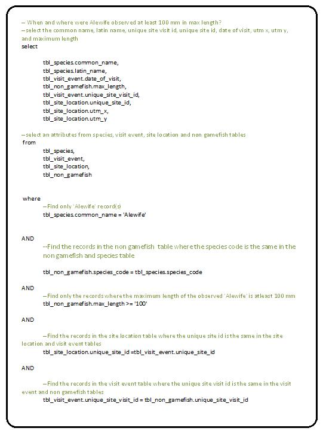

The Structured Query Language (SQL) is used to communicate with a database. The SQL statement allows to manipulate and access database by performing tasks such as update data on a database, or retrieve data from a database.SQL statements are divided into two major categories: Data Definition Language (DDL) and Data Manipulation Language (DML). The DDL statements allow building and modifying database objects using "Create", "Alter" and "Drop" statements. On other hand DML statements are used to access and manipulate data within the tables using "Select", "Insert", "Update", and "Delete", statements. Here SQL is explained with following topics:
Method(s) to populate tables
Syntax discussion
Five example Data Modification Language (DML) SQL Queries Based on a Question
Against a Database with complete comment lines to explain the syntax
Example 1:
"Where and when were toads observed?"
Select table1.*, table2.*, From table1, table2, Where X=Y, And Y=Z
Example 2:
Which locations are in a particular park?
Select table1.*, From table1 Where table1.location1 = "My Park"
Advantage of using Views
Method(s) to Populate Tables
Tables can be populated using various methods. Standard "Insert" statements with input data can be used to populate database tables. The "Update" and "Delete" statements can be used to update or delete existing records in the table respectively.
Today in the market various ETL (Extract Transform and Load) tools like Informatica, Datastage Ascential, SAS DI, etc. are available which can extract data from the source and able to populate various tables using rules provided in the ETL flow.
The "CREATE TABLE" statement is used to create a new table. To create a new table, enter the keywords create table followed by the table name, followed by an open parenthesis, followed by the first column name, followed by the data type for that column, followed by any optional constraints, and followed by a closing parenthesis. The DROP TABLE statement is used to delete a table.
CREATE TABLE "table"
(
"column1" data_type,
"column2" data_type,
"column3" data_type,
....
);
DROP TABLE "table";
The "INSERT INTO" statement is used to insert a new row in a table. Using insert statement, values can be inserted in all columns or the selective columns using following 2 different ways of writing INSERT INTO statement.
INSERT INTO "table" VALUES (value1, value2, value3,...);
INSERT INTO "table" (column1, column2, column3,...) VALUES (value1, value2, value3,...);
The "SELECT"statement is used to quary data from one or more tables in the database.
The select quary includes includes a list of columns to be inclded in the result.
immediately after select keyword. An asterisk ('*') is used after select key to
retrieve all columns. In the Select sQL syntax the "FROM" clause indicates tables from
which data to be pulled.
SELECT "column(s)" FROM "table"
SELECT * FROM "table";
The "WHERE" clause is used to extract only records which fulfills required conditions.
To fulfill the required conditions various operators -Equal (=), Grater than (>), Less
than (<), Grater than or equal (>=), Less than or equal (<=), Not equal to (<> or !=),
and LIKE (pattern matching operator with '%' sign used as wild card)can be used.
SELECT "column(s)" FROM "table" WHERE "column" operator value;
The "DELETE" statement is used to delete rows in a table.
DELETE FROM "table" WHERE "column" = value;
The "UPDATE" statement is used to update existing records in a table.
UPDATE "table" SET column1=value, column2=value2,...
WHERE column = value;
The "GROUP BY" is a aggregation function to eliminate duplicate rows. It used to
project rows having common values into a small set of rows. It comes after "WHERE"
clasue. The "HAVING" cluse includes a predicate used to filter rows resulting from
"GROUP BY" clause.
SELECT DISTINCT "column(s)" FROM "table" GROUP BY "column(s)" HAVING "column(s)"
operator value;
The "ORDER BY"is used to sort the result by a specified column. It can sort records in
ascending or descending order.
SELECT "column(s)" FROM "table_name" ORDER BY "column(s)" ASC|DESC;
To retrive information from different tables, the "JOIN" conditions are used to join
tables. These joins are : Inner Join, Self Join, Left Outer Join, Right Outer Join,
and Full Outer Join. Query must define column on which Join operation to be performed.
SELECT "column(s)" FROM "table1" INNER JOIN "table2
ON "table1.column" = "table2.column";
SELECT "column(s)" FROM "table1" LEFT JOIN "table2
ON "table1.column" = "table2.column";
SELECT "column(s)" FROM "table1" RIGHT JOIN "table2
ON "table1.column" = "table2.column";
SELECT "column(s)" FROM "table1" FULL JOIN "table2
ON "table1.column" = "table2.column";
The Primary Key and Foreign Key constrainsts can be added to the tables using following statements.
ALTER TABLE "table" ADD PRIMARY KEY ("column");
ALTER TABLE "tablea" ADD FOREIGN KEY ("column") REFERENCES table("column");
SQL Examples
Five example Data Modification Language (DML) SQL Queries Based on a Question Against a Database with complete comment lines to explain the syntax. Used Fish Sampling Datasets for SQL queries in pgAdminIII database administration tool.
Following are the examples which we used during the course.
Where and When the ATS Observed
What Game Fish were Observed in 2004
What Game Fish were Observed in Each Month of 2004 and What are the X,Y Coordinates

When and Where Alewife Observed At Least 100 mm in Max Length
What are the X,Y Coordinates for the Sites in George Washington Birthplace NM
Advantage of Using Views
A view in database is used to access data without actually accessing tables directly. View is a virtual table based on the sql statement within the view. It contains rows and column like table. The major advantages of view are :
Customize Data Format - Based on the requirement, the data in view can be formatted and computed different from underlying tables.
Customize Data for Business Rules - Based on the user requirement, the view can customize using various business rules in sql statement.
Data Complexity - All users are not able to write complex sql join queries. A complex query can be written within view to surface data. User will be able to query view by simple sql statement without knowing complexity behind the view.
Data Security and access control - View can subset data using sql query. By this way sensitive data in the table won't displayed in the view. By accessing view, user won't be able to manipulate data in table itself.
Reflection
After we developed a database in PostgreSQL next exercise was to insert data in the tables, analyze them, and create views for easy access of data in ArcGIS environment. We have data provided in the CSV file to load data in the database. Based on earlier topics and lectures we had, I had clear understanding of parent child relationship of tables including Primary Key and Foreign Key concept. I started with inserting data from CSV files to database using SQL editor in the PostgreSQL. Then using various SQL queries I made sure insert is done as per expectation in terms of number of records, and overall data quality. We had various assignments in ArcGIS where we access data from the database we created earlier. For easy access of data I wrote number of Views on top of tables. These views have underlying tables join as well.
Overall, I went through hands on exercises of SQL statements for inserting the data , creating views, and accessing data.